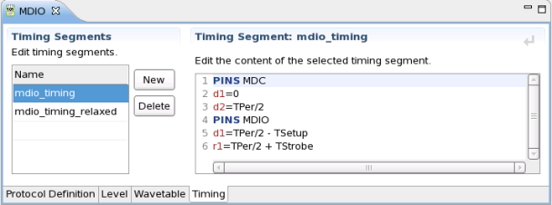

Timing tab
Within the timing tab you can specify one or more timing segments that can be linked into your device timing file.

The timing segment tab carries a symbolic name that will be referred from the device timing setup. There can be various definitions for multiple timing segments per protocol timing definition. This allows for merging timing segments flexibly to various timing set definitions and locations within the timing equation stream.
Within the protocol timing setup, the protocol timings are specified for pin roles explicitly. The protocol timing definition allows to use variables. These variables are resolved either in the equations or specifications of the device setup or directly in related timing segment.
In opposite to a regular device timing setup file, the segment does not need to carry timing setup information about any other pins that are out of scope of the protocol definition.
Functional changes
- Introduced in SmarTest 7.1.0